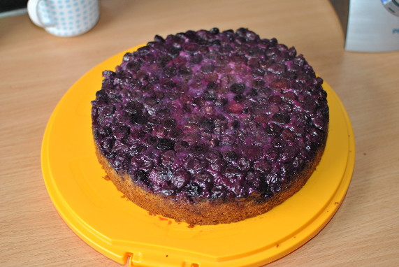

Gestürzter Heidelbeer-Walnuss-Kuchen

- Zubereitung: ca. 25 Minuten
- Backen: ca. 70 Minuten
- Für 1 Springform mit 24 cm Durchmesser
Zutaten
- 500 g Heidelbeeren
- 200 g Butter und etwas Butter für die Form
- 270 g Zucker
- 150 g Walnusskerne
- 1 TL abgeriebene Zitronenschale (Bio)
- 4 Eier (Größe M)
- 300 g Mehl
- 2 TL Backpulver
- 200 g Vollmilchjoghurt
Zubereitung
- Die Beeren verlesen, waschen und abtropfen lassen. Den Ofen auf 180° Celsius (Umluft: 160° Celsius) vorheizen. Den Formboden mit Backpapier belegen, den Rand buttern. Die Beeren mit 2 EL Zucker mischen und in der Form verteilen.
- Die Walnüsse grob hacken. Den restlichen Zucker (ca. 230 g) mit Butter und Zitronenschale etwa 8 Minuten weißschaumig schlagen. Die Eier nach und nach unterrühren. Mehl und Backpulver mischen, mit dem Joghurt nur locker unter die Butter-Eier-Creme
rühren. Die Nüsse unterziehen. Den Teig auf den Beeren verteilen, die Oberfläche glatt streichen.
- Den Kuchen im Ofen auf der zweiten Schiene von unten 40 bis 50 Minuten backen. Ein zweites Backblech oberhalb des Kuchens einschieben, damit er nicht zu braun wird. In circa 30 Minuten fertig backen. Den Kuchen herausnehmen und abkühlen lassen.
- Den Kuchen vom Rand lösen, in der Form auf eine Kuchenplatte stürzen. Den Rand der Form abnehmen und das Backpapier abziehen.